Temperature Control in a Heat Exchanger
This demo shows how to design feedback and feedforward compensators to regulate the temperature of a chemical reactor through a heat exchanger.
Contents
Heat Exchanger Process
A chemical reactor called "stirring tank" is depicted below. The top inlet delivers liquid to be mixed in the tank. The tank liquid must be maintained at a constant temperature by varying the amount of steam supplied to the heat exchanger (bottom pipe) via its control valve. Variations in the temperature of the inlet flow are the main source of disturbances in this process.
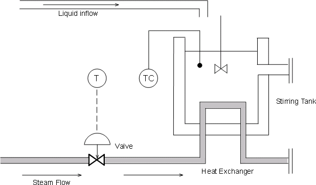
Figure 1: Stirring Reactor with Heat Exchanger.
Using Measured Data to Model The Heat Exchanger Dynamics
To derive a first-order-plus-deadtime model of the heat exchanger characteristics, inject a step disturbance in valve voltage V and record the effect on the tank temperature T over time. The measured response in normalized units is shown below:
heatex_plotdata
title('Measured response to step change in steam valve voltage');
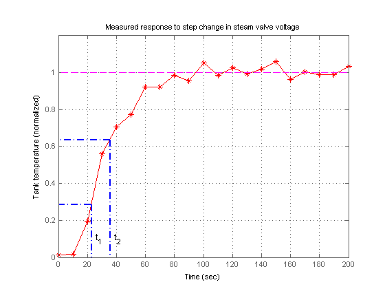 The values t1 and t2 are the times where the response attains 28.3% and 63.2% of its final value. You can use these values to estimate the time constant tau and dead time theta for the heat exchanger:
t1 = 21.8; t2 = 36.0; tau = 3/2 * ( t2 - t1 ) theta = t2 - tau
tau = 21.3000 theta = 14.7000
Verify these calculations by comparing the first-order-plus-deadtime response with the measured response:
s = tf('s');
Gp = exp(-theta*s)/(1+tau*s)
Transfer function:
1
exp(-14.7*s) * ----------
21.3 s + 1
hold on, step(Gp), hold off title('Experimental vs. simulated response to step change');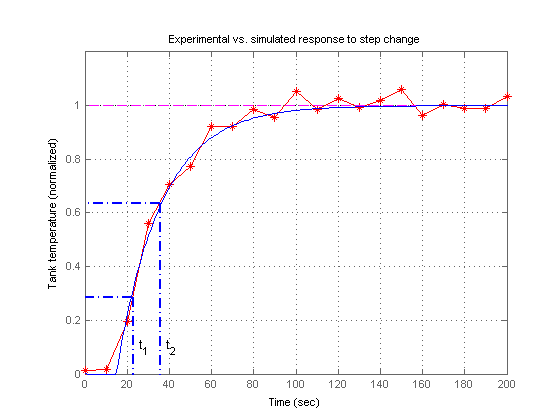
The model response and the experimental data are in good agreement. A similar bump test experiment could be conducted to estimate the first-order response to a step disturbance in inflow temperature. Equipped with models for the heat exchanger and inflow disturbance, we are ready to design the control algorithm.
Feedback Control
A block diagram representation of the open-loop process is shown below.
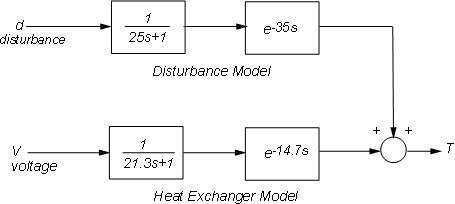
Figure 2: Open-Loop Process.
The transfer function
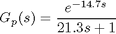
models how a change in the voltage V driving the steam valve opening affects the tank temperature T, while the transfer function
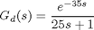
models how a change d in inflow temperature affects T. To regulate the tank temperature T around a given setpoint Tsp, we can use the following feedback architecture to control the valve opening (voltage V):

Figure 3: Feedback Control.
In this configuration, the proportional-integral (PI) controller
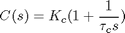
calculates the voltage V based on the gap Tsp-T between the desired and measured temperatures. You can use the ITAE formulas to pick adequate values for the controller parameters:
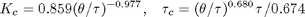
Kc = 0.859 * (theta / tau)^(-0.977) tauc = ( tau / 0.674 ) * ( theta / tau )^0.680 C = Kc * (1 + 1/(tauc*s));
Kc =
1.2341
tauc =
24.5582
To see how well the ITAE controller performs, close the feedback loop and simulate the response to a set point change:
Tfb = feedback(ss(Gp*C),1); step(Tfb), grid on title('Response to step change in temperature setpoint T_{sp}') ylabel('Tank temperature')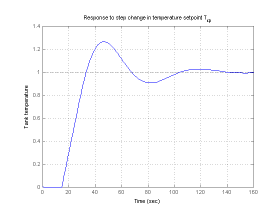
The response is fairly fast with some overshoot. Looking at the stability margins confirms that the gain margin is weak:
margin(Gp*C), grid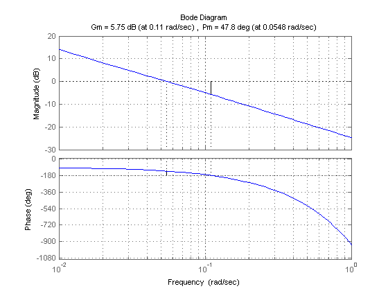
Reducing the proportional gain Kc strengthens stability at the expense of performance:
C1 = 0.9 * (1 + 1/(tauc*s)); % reduce Kc from 1.23 to 0.9
margin(Gp*C1), grid
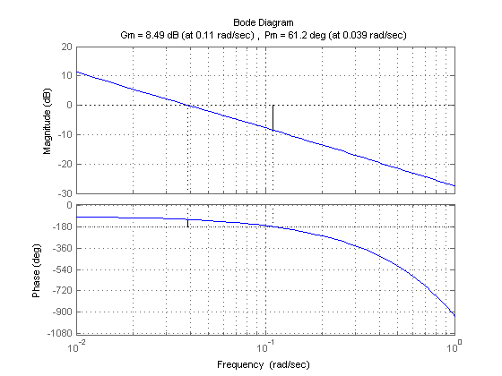 step(Tfb,'b', feedback(ss(Gp*C1),1),'r') legend('Kc = 1.23','Kc = 0.9')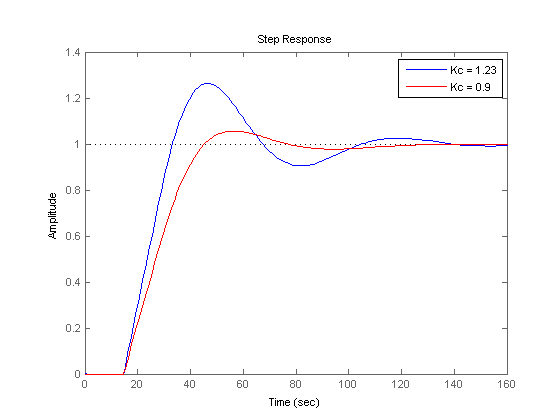
Feedforward Control
Recall that changes in inflow temperature are the main source of temperature fluctuations in the tank. To reject such disturbances, an alternative to feedback control is the feedforward architecture shown below:
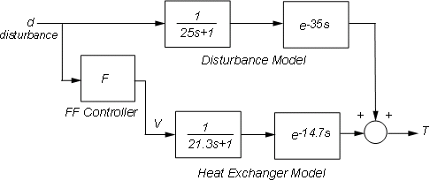
Figure 4: Feedforward Control.
In this configuration, the feedforward controller F uses measurements of the inflow temperature to adjust the steam valve opening (voltage V). Feedforward control thus anticipates and preempts the effect of inflow temperature changes.
Straightforward calculation shows that the overall transfer from temperature disturbance d to tank temperature T is

Perfect disturbance rejection requires
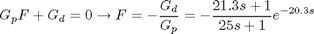
In reality, modeling inaccuracies prevent exact disturbance rejection, but feedforward control will help minimize temperature fluctuations due to inflow disturbances. To get a better sense of how the feedforward scheme would perform, increase the ideal feedforward delay by 5 seconds and simulate the response to a step change in inflow temperature:
Gd = exp(-35*s)/(25*s+1); F = -(21.3*s+1)/(25*s+1) * exp(-25*s); Tff = Gp * ss(F) + Gd; % d->T transfer with feedforward control step(Tff), grid title('Effect of a step disturbance in inflow temperature') ylabel('Tank temperature')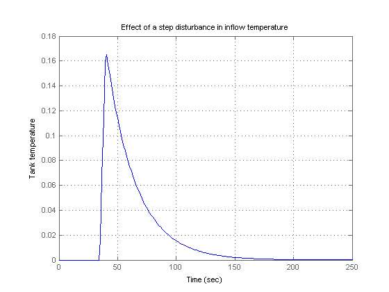
Combined Feedforward-Feedback Control
Feedback control is good for setpoint tracking in general, while feedforward control can help with rejection of measured disturbances. Next we look at the benefits of combining both schemes. The corresponding control architecture is shown below:
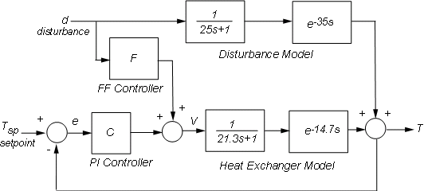
Figure 5: Feedforward-Feedback Control.
Use CONNECT to build the corresponding closed-loop model from Tsp,d to T. First name the input and output channels of each block, then let CONNECT automatically wire the diagram:
Gd.InputName = 'd'; Gd.OutputName = 'Td'; Gp.InputName = 'V'; Gp.OutputName = 'Tp'; F.InputName = 'd'; F.OutputName = 'Vf'; C.InputName = 'e'; C.OutputName = 'Vc'; Sum1 = sumblk('e','Tsp','T','+-'); Sum2 = sumblk('V','Vf','Vc','++'); Sum3 = sumblk('T','Tp','Td','++'); Tffb = connect(ss(Gp),Gd,C,F,Sum1,Sum2,Sum3,{'Tsp','d'},'T');
To compare the closed-loop responses with and without feedforward control, calculate the corresponding closed-loop transfer function for the feedback-only configuration:
C.InputName = 'e'; C.OutputName = 'V'; Tfb = connect(ss(Gp),Gd,C,Sum1,Sum3,{'Tsp','d'},'T');
Now compare the two designs:
step(Tfb,'b',Tffb,'r--'), grid title('Closed-loop response to setpoint and disturbance step change') ylabel('Tank temperature') legend('Feedback only','Feedforward + feedback')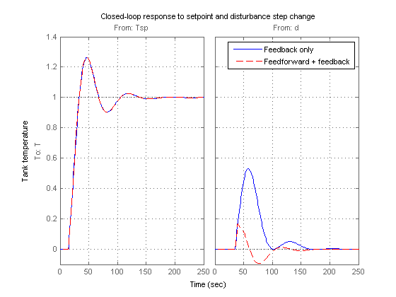
The two designs have identical performance for setpoint tracking, but the addition of feedforward control is clearly beneficial for disturbance rejection. This is also visible on the closed-loop Bode plot
bodemag(Tfb,'b',Tffb,'r--',{1e-3,1e1}) legend('Feedback only','Feedforward + feedback','Location','SouthEast')

Interactive Simulation
To gain additional insight and interactively tune the feedforward and feedback gains, use the companion GUI and Simulink® model. Click on the link below to launch the GUI.
Open the Heat Exchanger model and GUI
heatex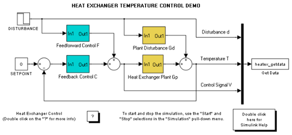 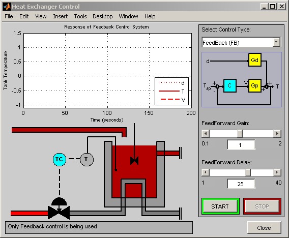